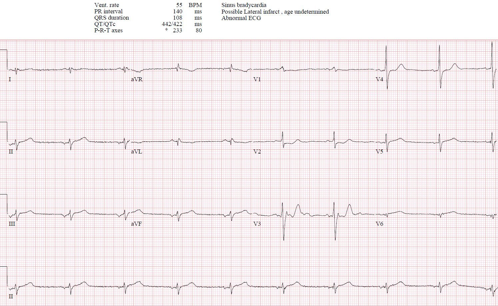
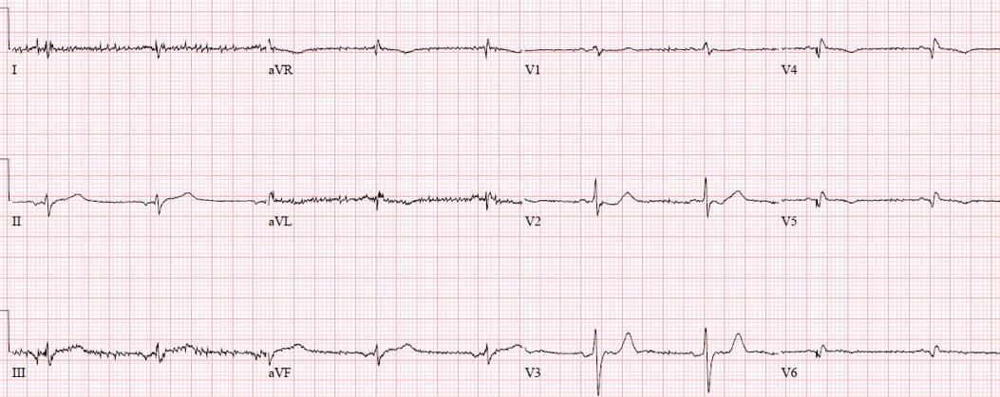
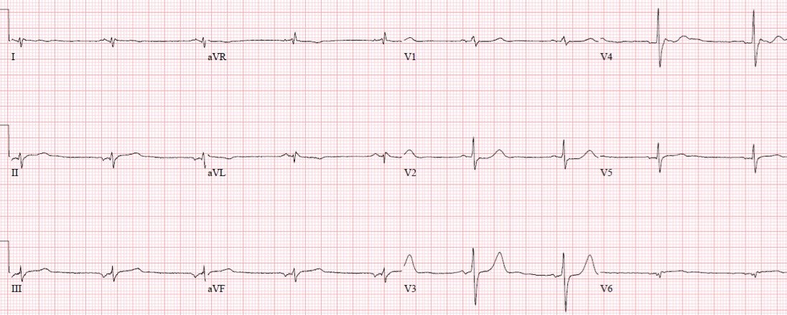
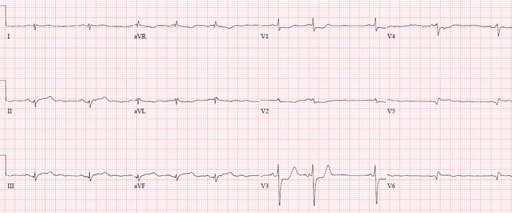
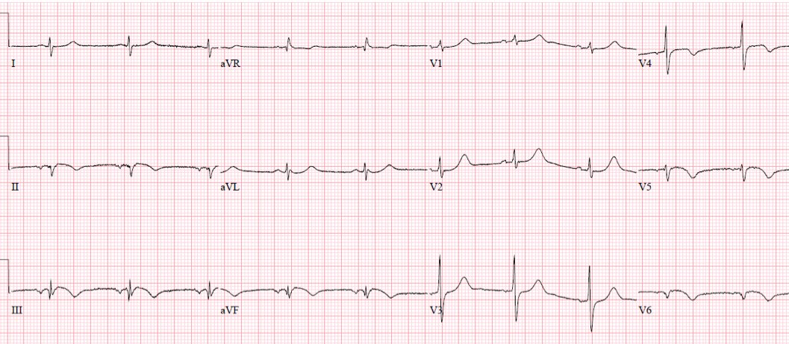
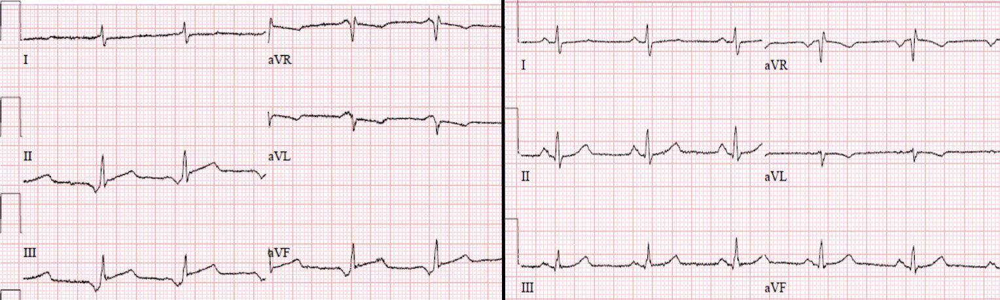
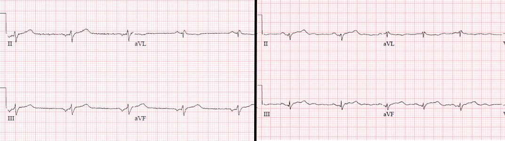
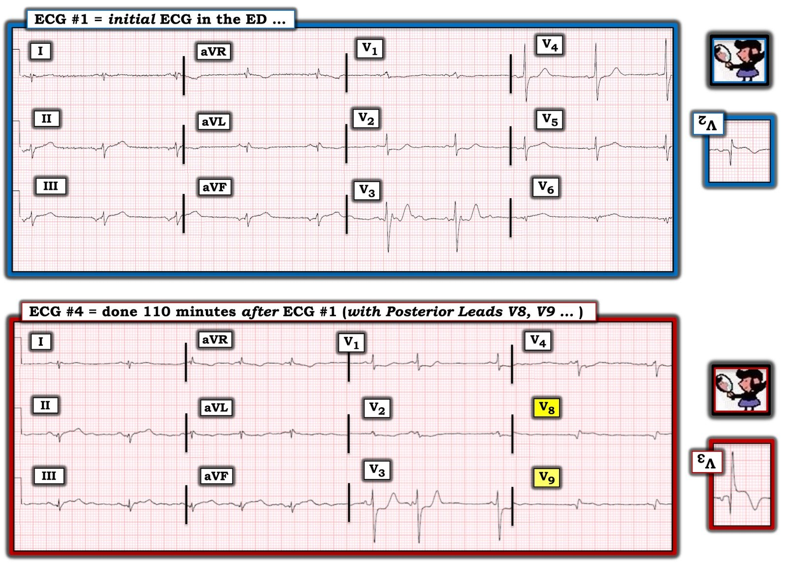

03/05/2022 — Vì sao có ST chênh lên ở các chuyển đạo dưới, và bạn có ghi chuyển đạo phía sau không?
Bản dịch tiếng Việt của bài "Why is there inferior ST elevation, and would you get posterior leads?" – Dr. Smith’s ECG Blog. Giữ nguyên toàn bộ 9 hình ảnh của bản gốc.
Tác giả: Jesse McLaren, kèm bình luận của Smith và Grauer
Một bệnh nhân 75 tuổi
đến viện vì đau thượng vị 8 giờ và nôn một lần. Bệnh nhân có
tiền sử sỏi mật nhưng không có tiền sử bệnh tim. Dấu hiệu sinh tồn bình thường, ngoại trừ
tần số tim 55, và dưới đây là điện tâm đồ lúc phân loại (triage). Bạn
nghĩ gì?


Có
nhịp chậm nhưng không phải nhịp xoang: tuy sóng P dương ở I nhưng lại đảo ngược
ở II, vì vậy đây là nhịp nhĩ thấp. Ngoài ra dẫn truyền bình thường, trục
không xác định, và điện thế bình thường. Có tăng tiến sóng R sớm với
R>S ở V1-2, ST chênh xuống nguyên phát ở V2-3, và sóng Q kèm sóng T tối cấp
ở V6. Có ST chênh lên ở các chuyển đạo dưới, nhưng điều này có thể là
thứ phát do tái cực nhĩ từ nhịp nhĩ thấp (xem phần bàn luận
bên dưới). Nhưng các chuyển đạo dưới cũng có sóng T tối cấp: rộng, đối xứng, và
cao hơn sóng R. Vì vậy đây là nhịp nhĩ thấp kèm
OMI dưới-sau-bên (infero-postero-lateral).
Bạn có ghi thêm chuyển đạo phía sau (posterior leads) không, và điều đó
sẽ thay đổi xử trí như thế nào?
Bình luận của Smith: điện tâm đồ này đã đủ để chẩn đoán OMI; chuyển đạo phía sau chỉ có thể gây hại nếu chúng thuyết phục bạn điều ngược lại.
Bác sĩ
cấp cứu nhận thấy ST chênh xuống ở các chuyển đạo trước và lo ngại bệnh nhân
đang bị hội chứng vành cấp (ACS), nhưng điện tâm đồ không đạt tiêu chuẩn STEMI. Vì vậy, theo các hướng dẫn
STEMI, họ cho dùng aspirin và yêu cầu ghi điện tâm đồ 15 chuyển đạo (bên dưới, V5-6
là V8-9). Bản này được ghi 20 phút sau điện tâm đồ đầu tiên:


Không có ST
chênh lên ở các chuyển đạo phía sau, nhưng ST chênh xuống ở các chuyển đạo trước cũng ít hơn. Điều này xác nhận OMI động (dynamic) nhưng vẫn “STEMI âm tính.” Vì vậy bệnh nhân được ghi các điện tâm đồ liên tiếp:
Điện tâm đồ 12 chuyển đạo ghi 50 phút sau điện tâm đồ đầu tiên, bệnh nhân vẫn còn đau:


Đoạn ST ở các chuyển đạo trước
phần nào bình thường hóa, kèm sóng T cao hơn một chút ở V3, và sóng T
ở các chuyển đạo dưới nhỏ đi, gợi ý đã có tái tưới máu ở một mức độ nào đó. Nhưng bệnh nhân vẫn
còn đau và điện tâm đồ vẫn là OMI STEMI âm tính (STEMI(-)OMI).
110 phút sau điện tâm đồ đầu tiên, một điện tâm đồ 15 chuyển đạo khác được ghi, sau khi có kết quả troponin I là 7,500 ng/L
(bình thường <26 ở nam, <16 ở nữ). Bệnh nhân vẫn còn đau, và
giờ có cảm giác tiền ngất:


Lúc này có
ST chênh lên tối thiểu ở các chuyển đạo phía sau nhưng ST chênh xuống ở các chuyển đạo trước cũng rõ hơn.
Nhịp giờ là nhịp xoang với sóng P dương ở I/II, và khi không còn sóng tái cực dương thì vẫn còn ST
chênh lên và sóng T tối cấp. Cuối cùng điện tâm đồ đã là OMI STEMI dương tính (STEMI(+)OMI) nhưng
các chuyển đạo phía sau là không cần thiết: thứ nhất, vì các thay đổi ở phía trước rõ hơn
ở phía sau, và thứ hai vì bệnh nhân đang bị
thiếu máu cục bộ kháng trị và troponin đầu tiên là 7,500 nên cần tái tưới máu
ngay lập tức bất kể điện tâm đồ thế nào.
Vì điện tâm đồ
cuối cùng đã đạt tiêu chuẩn STEMI nên phòng thông tim (cath lab) được kích hoạt: tắc 100% động mạch mũ trái
đoạn gần, với troponin đỉnh 50,000 (một nhồi máu cơ tim rất lớn).
Dưới đây là
điện tâm đồ lúc ra viện hai ngày sau: trở lại nhịp nhĩ thấp, với sóng Q và sóng T
đảo ngược ở các chuyển đạo dưới, xác nhận sóng T ban đầu là tối cấp; sóng Q và
sóng T đảo ngược do tái tưới máu ở các chuyển đạo bên, và hình ảnh tương đương ở phía sau (sóng R cao và sóng T cao ở các chuyển đạo trước):


Khi làm theo mô hình STEMI, thời gian từ điện tâm đồ đến kích hoạt là 2 giờ, và thời gian từ cửa đến bóng (door-to-balloon) là 3 giờ 20 phút, mặc dù bác sĩ đã lo ngại nhồi máu cơ tim và đã nhận ra ST chênh xuống nguyên phát ở các chuyển đạo trước. Nhưng vì điện tâm đồ không đạt tiêu chuẩn STEMI nên họ ghi các điện tâm đồ liên tiếp để xem liệu cuối cùng có bản nào đạt tiêu chuẩn hay không. Nếu
các chuyển đạo phía sau không đạt được mức chênh lên tối thiểu, có lẽ bệnh nhân
đã được nhập viện với chẩn đoán “NSTEMI” và bị chậm tái tưới máu lâu hơn nhiều.
Khi làm theo mô hình OMI, sự chậm trễ tái tưới máu này đã có thể tránh được. Như Smith và Meyers đã phát hiện trong nghiên cứu gần đây về OMI thành sau, ST chênh xuống do thiếu máu cục bộ, tối đa ở V1-V4, có độ đặc hiệu 97% đối với OMI. Hơn nữa, “Trong số 99 bệnh nhân OMI có STDmaxV1–4 (tất cả đều được cho là có lợi từ tái tưới máu cấp cứu), 52 (53%) bệnh nhân không đạt tiêu chuẩn STEMI có nồng độ troponin đỉnh cao tương tự nhưng khả năng được thông tim trong vòng 90 phút kể từ khi đến viện thấp hơn có ý nghĩa. Chúng tôi tin rằng những bệnh nhân cần tái tưới máu cấp cứu này nhiều khả năng đã không được tái tưới máu vì không có tiêu chuẩn STEMI, mặc dù họ hoàn toàn có thể được nhận diện dễ dàng và ngay lập tức nhờ STDmaxV1–4, cùng với các dấu hiệu OMI tinh tế khác. Hơn nữa, ở một phần ba số bệnh nhân có tiêu chuẩn STEMI, các tiêu chuẩn đó xuất hiện với trung vị 1 giờ sau khi STDmaxV1–4 xuất hiện; chẩn đoán sớm hơn nhờ STDmaxV1–4 đã có thể giúp tái tưới máu sớm hơn.”[1]
Hiện tượng Emery (Emery phenomenon) so với nhồi máu cơ tim do tắc (Occlusion MI)
Tái cực
nhĩ có hướng ngược với khử cực, vì vậy khi sóng P dương
thì sóng tái cực nhĩ sẽ âm. Sóng này thường nhỏ và bị vùi
trong QRS, nhưng đôi khi có thể kéo dài quá QRS và giả ST
chênh xuống (xem ca này). Nhưng nếu sóng P đảo ngược, tái cực nhĩ sẽ
dương—và nếu kéo dài quá phức bộ QRS thì có thể giả ST chênh lên.
Xem ca này
và phần bàn luận về một bệnh nhân đến viện vì đau ngực, người
có vẻ có ST chênh lên ở các chuyển đạo dưới. Bên trái: sóng P đảo ngược lớn ở các chuyển đạo dưới,
sóng tái cực nhĩ dương và tương xứng tạo ra ST chênh lên (và ST chênh xuống soi gương), cùng sóng T bình
thường (nhỏ, đỉnh hẹp và không đối xứng). Bên phải: điện tâm đồ ghi lại sau khi trở về nhịp
xoang, cho thấy không có ST chênh lên do thiếu máu cục bộ và sóng T bình thường:


Ngược lại, đây là các điện tâm đồ của ca bệnh
trình bày ở trên. Bên trái: nhịp nhĩ thấp với sóng P nhỏ, ST chênh lên không tương xứng và sóng T tối cấp (tương đối lớn, đỉnh tròn và đối xứng). Bên phải: trở về nhịp
xoang nhưng ST chênh lên và sóng T tối cấp vẫn tồn tại:


Điều cần nhớ
1.
nhịp nhĩ thấp có thể tạo ra sóng tái cực nhĩ
giả ST chênh lên, nhưng điều này không gây ra ST chênh lên không tương xứng hay sóng T tối cấp
2.
ST chênh xuống nguyên phát ở các chuyển đạo trước là đặc hiệu cho
nhồi máu cơ tim do tắc (Occlusion MI) mà không cần đến chuyển đạo phía sau
3. Tiêu chuẩn STEMI, kể cả chuyển đạo phía sau, có thể âm tính giả và dẫn
đến chậm tái tưới máu
TÀI LIỆU THAM KHẢO:
1. Meyers HP, Bracey A, Lee D, và cs. Ischemic ST-segment depression maximal in V1-V4 (versus V5-V6) of any amplitude is specific for occlusion myocardial infarction (versus nonocclusive ischemia). Tạp chí J of Amer Heart Assoc, 2021

===================================
BÌNH LUẬN CỦA TÔI, bởi KEN GRAUER, MD (3/5/2020):
===================================
Một ca bệnh sâu sắc của Dr. Jesse McLaren — trong đó anh ấy điểm lại những khía cạnh quan trọng liên quan đến các điện tâm đồ liên tiếp trong ca hôm nay. ĐIỀU CỐT LÕI: Phòng thông tim được kích hoạt 2 giờ sau điện tâm đồ ban đầu — nhưng phòng thông tim lẽ ra phải được kích hoạt rất sớm sau điện tâm đồ ban đầu. Bao nhiêu cơ tim có thể đã được cứu nếu tình trạng tắc 100% LCx (động mạch mũ trái – Left Circumflex) đoạn gần, vốn dẫn đến troponin đỉnh 50,000, được tái tưới máu sớm hơn — là điều không thể biết.
- Tôi tập trung bình luận vào một số chi tiết tinh tế bên cạnh những điểm Dr. McLaren đã nêu bật. Để làm điều này — tôi đã đặt lại bản ghi thứ 1 và thứ 4 của ca hôm nay (Hình 1).


Bệnh nhân trong ca hôm nay là một người lớn 75 tuổi đến viện vì đau thượng vị 8 giờ kèm nôn. Xem trước tiên điện tâm đồ #1, như Dr. McLaren đã nêu — sóng P âm ở chuyển đạo II, cùng sóng P dương ở chuyển đạo aVL, xác định đây là nhịp nhĩ thấp với tần số ~55/phút.
- Bác sĩ khoa cấp cứu (ED) đã lo ngại một cách thích đáng về ST chênh xuống ở các chuyển đạo trước trong điện tâm đồ #1 — dù tiêu chuẩn STEMI dựa trên milimét chưa được đáp ứng.
- Ngoài ra, Dr. McLaren còn ghi nhận ST chênh lên kèm sóng T tối cấp ở các chuyển đạo dưới — dấu hiệu R>S ở các chuyển đạo V1,V2 — và sóng Q kèm sóng T tối cấp ở chuyển đạo V6.
Tôi xin bổ sung các nhận xét sau về điện tâm đồ #1:
- Có điện thế thấp (tức là Không chuyển đạo chi nào vượt quá 5 mm) rõ rệt. Biên độ QRS ở 4/6 chuyển đạo trước tim cũng giảm đáng kể (đặc biệt ở chuyển đạo V1 và V6). Tuy điện thế thấp rõ ràng là một dấu hiệu điện tâm đồ không đặc hiệu với danh sách chẩn đoán phân biệt dài (mà tôi đã điểm lại trong phần Bình luận của tôi ở cuối trang của bài ngày 12 tháng Mười Một năm 2020 trên Blog của Dr. Smith) — vẫn có một số điều cần cân nhắc liên quan đến ca hôm nay. Điện thế thấp có thể là hậu quả của: i) Thể trạng to lớn (Xem bên dưới); và, ii) một nhồi máu cơ tim lớn (do “choáng” cơ tim).
- Việc không có sóng P dương ở chuyển đạo II của điện tâm đồ #1 làm phức tạp việc đánh giá các thay đổi ST-T ở các chuyển đạo dưới. Đơn giản là không thể loại bỏ ảnh hưởng tiềm tàng của Hiện tượng Emery mà Dr. McLaren đã mô tả ở trên. Dù vậy — ngoài kích thước nhỏ của sóng P âm mà Dr. McLaren đã ghi nhận ở điện tâm đồ #1 (tức là kích thước của sóng Ta [tái cực nhĩ] tương xứng với kích thước sóng P của nó) — khoảng PR của sóng P âm thì không quá ngắn, do đó ít có khả năng hơn nhiều sẽ đẩy sóng Ta ngược hướng sang phải đủ xa như tôi nghĩ là cần thiết để ảnh hưởng đến các sóng T lớn không tương xứng ở các chuyển đạo dưới (Xem phần Bình luận của tôi trong bài ngày 3 tháng Sáu năm 2020).
- Cũng làm phức tạp việc đánh giá điện tâm đồ #1 — là hình dạng bất thường của phức bộ QRS ở một số chuyển đạo. Tôi không thể nhớ nổi lần cuối cùng mình thấy một phức bộ QRS ba pha nhỏ xíu nhưng chủ yếu âm như chúng ta thấy ở chuyển đạo I là khi nào. Ban đầu tôi nghĩ điều này hẳn phải do một kiểu đặt sai vị trí điện cực nào đó — nhưng các điện tâm đồ sau đó đã xác nhận hình dạng QRS rất bất thường này ở chuyển đạo I (Xem điện tâm đồ #4 trong Hình 1).
- Tôi cũng thấy hình dạng của chuyển đạo V6 rất bất thường. Tôi hoàn toàn đồng ý với Dr. McLaren rằng sóng Q và sóng T lớn không tương xứng rõ rệt ở chuyển đạo này gợi ý mạnh OMI thành bên cấp. Nhưng tôi thấy thật kỳ lạ khi đi từ hình dạng đẳng pha R=S với sóng R cao 4.5 mm ở chuyển đạo V5 — sang một phức bộ QRS nhỏ xíu, gần như âm hoàn toàn ở chuyển đạo V6.
- Chuyển đạo V3 bị nhiễu làm hỏng. Ngoài các sóng lệch thừa ở đường nền — giả r’ ở cuối mỗi QRS là vô lý khi xét đến việc phức bộ QRS hẹp như thế nào ở 10/12 chuyển đạo. Chuyển đạo V1 là chuyển đạo còn lại có giả giãn rộng QRS, vì phần khởi đầu gập góc của QRS nhỏ xíu ở chuyển đạo này là vô lý.
Tôi muốn nói điều gì?
Hóa ra là ngay cả khi chúng ta bỏ qua các thay đổi ST-T ở các chuyển đạo dưới (vì lo ngại về Hiện tượng Emery) — và bỏ qua sóng T tối cấp rõ ràng ở chuyển đạo V6 (vì nó không đạt tiêu chuẩn STEMI dựa trên milimét) — thì chuyển đạo V2 vẫn đủ để chẩn đoán (Xem bên dưới). Xét tầm quan trọng này của chuyển đạo V2 trong việc diễn giải — tôi xin bổ sung điều sau vào phần Điều Cần Nhớ của ca hôm nay:
- “Chủ đề” điện thế thấp (ở cả chuyển đạo chi và chuyển đạo trước tim) — cộng với — hình dạng QRS kỳ lạ ở chuyển đạo I — hình dạng QRS quá nhỏ (và âm hoàn toàn một cách bất ngờ) ở chuyển đạo V6 — hiện tượng giả giãn rộng QRS ở chuyển đạo V1 — và — nhiễu ở QRS và ST-T khiến chuyển đạo V3 trở nên không đáng tin cậy để đánh giá ST-T — ở bệnh nhân này, người đang được cân nhắc khả năng tắc động mạch vành cấp — lẽ ra phải ngay lập tức thúc đẩy việc ghi lại điện tâm đồ. Giá trị chẩn đoán của chuyển đạo V2 rõ ràng sẽ được củng cố hơn nếu có một bản ghi hợp lệ bao gồm cả các chuyển đạo lân cận V1 và V3. Tôi sẽ không chờ đợi mới ghi lại điện tâm đồ.
- Những giải thích có thể cho điện thế quá thấp và hình dạng QRS bất thường mà chúng ta thấy ở một số chuyển đạo gồm lỗi đặt điện cực và thể trạng (body habitus). Bệnh nhân có thân hình quá to lớn không?
- NẾU bệnh nhân là nữ — thì tôi sẽ tự hỏi liệu sự sụt giảm đột ngột biên độ sóng R ở chuyển đạo V6 có thể liên quan đến việc các điện cực chuyển đạo ngực bên được đặt lên trên (thay vì bên dưới) mô vú hay không (Bài tổng quan hay trong GE Healthcare-2022).
Vì sao chuyển đạo V2 ở điện tâm đồ #1 có giá trị chẩn đoán?
Tôi thường đề xuất nghiệm pháp soi gương (Mirror Test) như một công cụ trực quan đơn giản giúp nhận diện OMI thành sau cấp (Bình luận của tôi ở cuối trang trong bài ngày 21 tháng Chín năm 2020 trên Blog của Dr. Smith).
- Nghiệm pháp soi gương — dựa trên tiền đề rằng các chuyển đạo trước cung cấp hình ảnh soi gương của hoạt động điện ở thành sau. Chỉ cần lật ngược một điện tâm đồ 12 chuyển đạo chuẩn, rồi giơ nó lên trước ánh sáng — bạn có thể dễ dàng hình dung “hình soi gương” của các chuyển đạo V1,V2,V3.
- Ưu điểm của nghiệm pháp soi gương so với việc dùng chuyển đạo phía sau — là hoạt động điện không phải đi xuyên qua khối cơ lưng dày — vì vậy độ lệch của đoạn ST thường dễ nhận thấy hơn nhiều.
- Để giúp nhận ra ý nghĩa lâm sàng của ST-T chênh xuống ở chuyển đạo V2 của điện tâm đồ #1 — tôi đã đặt hình soi gương của chuyển đạo này ở bên phải bản ghi. Hãy nhớ rằng hình soi gương của chuyển đạo trước này cho ta bức tranh về hoạt động điện diễn ra ở thành sau của thất trái (LV).
- CHẲNG PHẢI góc nhìn soi gương của chuyển đạo trước này ở điện tâm đồ #1 gần như đang gào lên rằng “Tôi đang bị OMI thành sau cấp” (tức là sóng Q lớn kèm ST chênh lên tối cấp và sóng T bắt đầu đảo ngược) đó sao?
Điện tâm đồ #4 trong Hình 1 được ghi 110 phút sau điện tâm đồ #1. Cơ chế xoang đã được khôi phục (sóng P giờ đã dương ở chuyển đạo II) — với nhịp là loạn nhịp xoang và ít nhất 1 PAC. Tôi thấy bản ghi này rất có giá trị khi cho thấy sự so sánh giữa việc dùng nghiệm pháp soi gương với phức bộ QRS ở chuyển đạo V3 — với hình dạng của các chuyển đạo phía sau V8 và V9 được ghi vào cùng một thời điểm.
- Chẳng phải OMI thành sau cấp dễ nhận ra hơn từ hình soi gương của chuyển đạo V3 sao? — so với từ các phức bộ QRST có biên độ nhỏ hơn thấy ở các chuyển đạo phía sau?